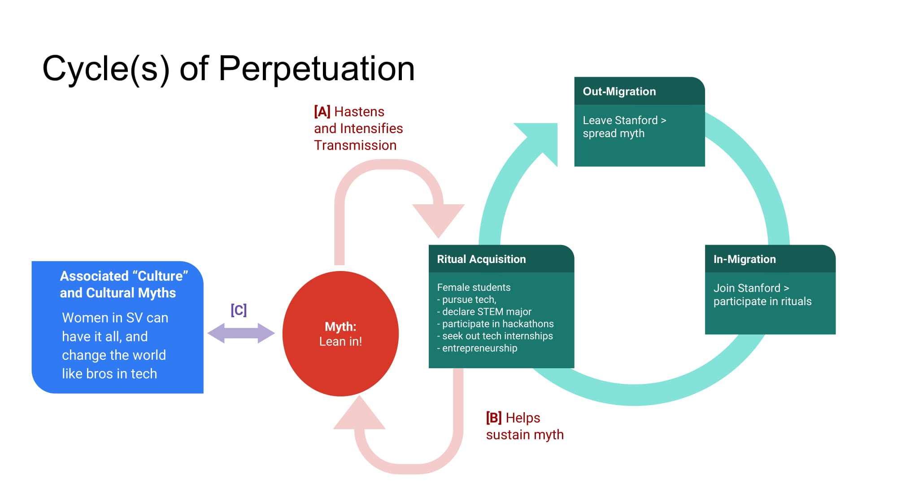

We saw at the end of Origins that various pieces of evidence seem to suggest
We know the second myth is false, thanks to (i) statistics and studies on the underrepresentation of women in Silicon Valley and other tech communities more broadly, and (ii) interviews and personal stories from female tech employees and tech entrepreneurs. The first myth is also not entirely true.
We address the claims above in Analysis. Here, we consider how, regardless of whether 1. and 2. are true, such myths continue to create lasting impressions within Stanford. In particular, we explore

[A]. The pairing of myth and ritual dates back to the Cambridge Ritualists, who thought that myth does not stand by itself but is tied to ritual. Adopting this approach, we consider how the first myth sanctions and may help routinize various campus rituals.
At Stanford, women-focused STEM student groups organize panels, faculty talks, company tours, informal mixers and coffee chats with female professionals --- all of which are attended by many female students interested in tech-related fields. Additionally, some groups pair underclasswomen with upperclasswomen, in so-called Sibling Family ("Sib Fam") programs. As a female mechanical engineering undergraduate (Class of 2019) and member of Stanford Society of Women Engineers puts it,
"I think that a big component of all of them is mentorship and role models. It can be hard to find women in male-dominated fields, so getting advice from someone slightly older than you helps women both prepare for the future and see working in these roles as a real possibility."
We observe that the myth, which many freshly arrived female students are aware of, encourages them to explore and partake in such community-based activities (viewed as rituals) without fear of isolation or not belonging. Various anthropological theories can account for this phenomenon.
Bronisław Malinowski, through ethnographic studies of Melanesian populations, noted the importance of myths (to its adherents) in sanctioning rituals and in maintaining the complex social organization of a population. At Stanford, students who identify with the myth participate in the activities described above. They do so together, out of each and every individual's belief in the myth. The student groups and related events like the Women in Data Science conference and Women in STEM Symposium, in which professional connections between networks of women scientists and engineers are created, testify to the formation and maintenance of social relations among Stanford women in STEM that are centered on the myth.
Another point of view originates in the etiological approach, which sees myths as "primitive science" offering heuristic explanations for natural phenomena. The myth now plays the role of an explanation for the apparent success of Stanford students at obtaining jobs in Silicon Valley. Because of the warm ties between Stanford and Silicon Valley, anyone from Stanford (male or female) who works hard ("leans in") is set to land a job in a tech company and have their future set in stone (because it's Silicon Valley, the land of wealth, creation and innovation). The ritualistic activities are then viewed as strategies making up the "primitive scientific theory," with strategic rules learned from evidence of success.
The etiological approach actually helps pave the way for modern evolutionary approaches, which may offer a more illuminating and useful account. Several cultural evolutionists (e.g., Joseph Henrich, Michael Muthukrishna) have proposed theories for the existence and persistence of religion, and ground such theories on ethnographic and historical data as well as biological and psychological approaches (see e.g., Atran and Henrich 2010 and The Database of Religious History). Broadly speaking, these theories view religion as a particular cultural innovation, which, like other human innovations, confers biological advantages to human populations and ensures their survivability. Adopting such an approach, rituals can be viewed as cultural tools, a collection of rituals a cultural package, and myths posthoc narratives seeking to "storify" --- i.e., make sense of --- the cultural package. Under this framework, the myth exists as a narrative, refined over multiple generations of Stanford students, explaining and summarizing the steps taken by women at Stanford that have led to their success in the tech world. The steps themselves are organized and routinized as rituals, the activities we described earlier. Precisely because of its explanatory value (i.e., connecting a series of activities through a common synopsis), the myth ensures the continuation of its constituent ritualistic activities (which are understood as logical constituents of the explanation). In other words, the myth not only summarizes the rituals but hastens their adoption by (or transmission to) new Stanford students, because its credibility has stood the test of time. This approach is consistent with Jonathan Z. Smith, who described how the routinization of an activity depends crucially on the sacrosanctness its occurrence. ("Ritual is an exercise in strategic choice," wrote Smith.) Indeed, the sacred nature of landing a job and making a difference in Silicon Valley may be sufficient for a series of activities to be routinized and subsequently refined over multiple generations.
[B]. The evolutionary approach also elucidates the causative relationship between the rituals and the myth. As described earlier, the myth functions as a narrative summary of the ritual package. As more and more women at Stanford participate in the ritualistic activities and build a community, the more effectively and quickly technical skills and beneficial strategies are transmitted and acquired. The increase in number of competent women is then associated with a higher incidence of Stanford women in STEM joining the tech workforce, which sustains the myth of "leaning in" and "having it all" (see bottom pink arrow in Figure above).
Looking further, the evolutionary approach also points to multiple mechanisms under which the myth is sustained through the spread of its rituals. Apart from the myth being spread within Stanford, women who leave Stanford and work in tech industries around the world are carriers of the ritualistic package and can spread the package with its narrative myth to individuals who have not set foot on Stanford (see green cycle in Figure above). In other words, women who aspire toward tech careers meet role models, who are the successful Stanford women, and receive the ritualistic package through its mythical synopsis. These individuals may end up moving to Stanford for their studies, and because they are already familiar with the rituals and possess the tools and beneficial strategies, have a headstart in pursuing a tech career. There may be some evidence of this mechanism in the growing number of female Stanford students interested in or even pursuing tech.
There is one caveat to this approach. It hinges on the assumption that the rituals associated with the myth are sufficiently refined that they capture only the essential steps guaranteeing a Stanford female student's fulfillment of "leaning in" and "having it all." As Wendy Doniger draws from studies of the Hebrew Bible and Hindu mythology (Doniger 1999), myths have a super-microscopic and sub-telescopic character: they sit between individual narrative and generalized theory. As we will see in Analysis, multiple nuances in the path to success in tech, as well as systematic biases existent in the current male-dominated tech community, challenge the effectiveness of the rituals in helping women attain their aspirations in tech and, therefore, the veracity of the myth.